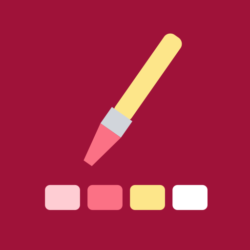

Brushbook
Six months later you start the next squad and can't remember which wash you used. Brushbook keeps every scheme step by step, linked to the paints you own, and tells you what to buy before you start.
Features
- Recipes step by step: technique, paints, mix ratio and how you did it
- Your paint collection with colour swatches, and a check that stops you adding the same pot twice
- Mark paints running low or empty, and a shopping list builds itself
- Every recipe tells you which paints you're missing
- Projects from the pile of shame to done, with models left to paint
- Works offline. No account, no ads.
- Free: up to 40 paints and 5 recipes, unlimited projects
- Pro (A$6.99 once): unlimited paints and recipes, recipe sharing, CSV export, and backup and restore